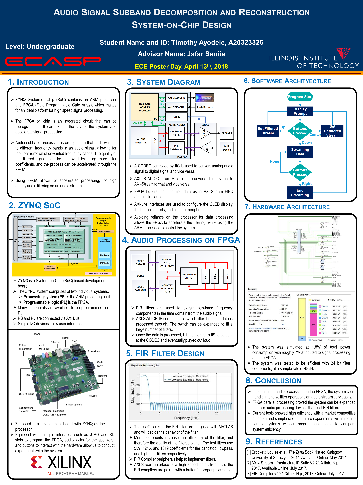

Boyang Wang - Résumé
PERSONAL DETAILS
EDUCATION
RESEARCH INTERESTS
SKILLS
EXPERIENCE
Research Assistant Illinois Institute of Technology (2015-2020)
Teaching Assistant Illinois Institute of Technology (2015-2020)
Research Student Argonne National Laboratory (2017-2018)
RESEARCH PROJECTS
Reconfigurable Ultrasonic NDT System based on ZYNQ APSoC (2015-2019)
Statistical Signal Analyzing and Processing based on Artificial Intelligence (2016-2019)
Data Compression using Wavelet Packet Transform Optimized by Convolutional Autoencoder (2020)
OTHER PROEJCTS
Wearable sensor network for human gesture detection based on Artificial Intelligence (2019-2020)
A single Camera 3D microscope detail scanner (2019)
AWARDS
HOBBIES
CERTIFICATIONS
PUBLICATIONS
王博杨 - 简历
联系方式
教育背景
科研方向
技术能力
工作经历
研究助理 伊利诺伊理工大学 (2015-2020)
助教 伊利诺伊理工大学 (2015-2020)
研究助理 美国阿贡国家实验室 (2017-2018)
项目经历
基于可编程片上系统的超声波无损探伤系统设计 (2015-2019)
基于神经网络的超声波无损探伤信号处理 (2016-2019)
卷积自编码器用于优化基于小波包分解的超声波信号压缩 (2020)
固态媒介中的超声波通讯 (2017-2020)
其他课题
基于神经网络和传感器网络的人类姿态检测 (2019-2020)
基于单通道显微镜相机的3D细节扫描仪 (2019)
基于神经网络和单(双)通道腹膜心电图的胎儿心率检测 (2018)
获奖情况
证书
论文情况
Research Projects
Ultrasonic NDT Signal Acquisition and Processing (USAP) System based on ZYNQ APSoC (2015-2019)
Introduction
System Implementation
Example Result
PUBLICATIONS
Software Defined Ultrasonic Communication System based on ZYNQ SoC (2017-2020)
PUBLICATIONS
Statistical Signal Analyzing and Processing based on Artificial Intelligence (2016-2019)
Ultrasonic Flaw Detection based on Temporal and Subband Signals Applied to Neural Network (2017-2018)
Multilayer Perceptron Neural Networks for Grain Size Estimation and Classification (2019)
FECG and MECG charachterization using machine learning (2018)
Introduction
Training the Neural Network with Tensorflow
Result
Conclusion
PUBLICATIONS
Course Projects
ECE425 Analysis and Design of Analog IC - Operational Amplifier Design (Fall2015)
Introduction
Calculations
Schematics and Simulations
Schematic Setup
Bode Plot (DC gain & Unity Gain Frequency & Gain Margin)
Phase Margin Test
Slew Rate Test
Input offset Voltage
Input Common Mode Range
Output swing
Openloop response
Performance evaluation
Openloop Gain
Slew Rate
ICMR
Output swing
Power Consumption
Conclusion
Reference
ECE565 Nodule Detection based on Statistical Signal Analysis (Spring2015)
Introduction
Methods and Results
Step 1: Segmentation of the lungs
Step 2: Detection and segmentation of lesion candidates
Step 3: Connectivity analysis and feature extraction from the segmented lesion candidates
Step 4: Feature selection and classification of the lesion candidates by using a rule based scheme
Discussion and Conclusion
References
ECE584 DCT Implementation Optimization on VLSI level (Spring2014)
Introduction
Background
Implementation
DCT direct implementation with Algorithm Strength Reduction
binDCT multiplier-less DCT implementation
Functional Validation and verification
MATLAB ISE co-simulation
Result
Conclusion and Future Work
Reference
ECE529 Advanced VLSI Systems Design (Spring2014)
Introduction
Background
multiplier
Conventional Domino Technique
Split Path Data Driven Dynamic Logic
Architecture Exploration
Function Validation and Verification
Dual rail DOMINO adder design
Split Path Data Driven Dynamic Logic
Bonus
Power gating of the Dual rail DOMINO design
Power gating of the Split Path Data Driven Dynamic Logic design
Comparison of these two designs
Results
Conclusion and Future Work
Reference
ECE429 Intro to VLSI (Fall2013)
Introduction
Background Knowledge
implementation and Simulation
Carry Ripple Adder
Carry Skip Adder
Carry Select Adder
Prefix Adder: Koggle Stone
bonus: multiplier
Conclusion
ECE587 Hardware/Software Codesign (Fall2013)
Introduction
Background Knowledge
2D NoC Architecture
System Implementation
System Evaluation
Conclusion
Appendix
ECE441 Microcomputers and Embedded Computing Systems (Spring2013)
Other Projects
SidePrj: GRBL Python Library (2019)
Introduction
Implementation
SidePrj: Control MSOX2024a with pyvisa (2019)
System Environment Setup
Implementation
References
SidePrj: Split Spectrum Processing Implementation with Python (2018)
Introduction
Implementation
Results
checkee.info data Crawl and Analysis (2018)
Introduction
update on July 2019:
update on March 2020:
Implementation
Example Results
Disclaimer:
Note:
WeekendPrj: Adapting OV7670 camera module with Nexys4 DDR board (2017)
Introduction
Camera Interface
Vivado IP-Integrator
Result
WeekendPrj: 32by16 RGB Panel Control with ZYNQ APSoC(2017)
Introduction
LED Panel Design & FPGA code to drive it
Top Level FPGA Block Diagram
Write Software in XSDK
Test Results
Project Expansion
To duplicate the design
References
Supervised Students’ Projects
Faster R-CNN Applied to Ultrasonic Images for Breast Lesion Detection and Classification (2020)
Introduction
Results
publication
A Single-Camera 3D Microscope Scanner with Image Stitching and Stereo Matching (2019)
Introduction
System Implementation
Results
publication
ZYNQ APSoC based real-time HDMI Video Processing (2019)
Poster1
Poster2
Audio Signal Subband Decomposition and Reconstruction using ZYNQ APSoC (2018)
Poster
Awards
Sigma Xi/IIT Student Award for Excellence in University Research (2020)
Student Paper Competition Winner in the 2019 IEEE International Ultrasonics Symposium (2019)
Excellence Award in Field Rank Students’ Science And Technology Innovation Project (2011)
First prize in Beijing college students’ Physical Experimental Contest (2010)
Certifications
DeepLearning.AI TensorFlow Developer
Machine Learning
Algorithms
BoyangWangPersonalSite
»
Supervised Students’ Projects
»
Audio Signal Subband Decomposition and Reconstruction using ZYNQ APSoC (2018)
Next
Previous
Audio Signal Subband Decomposition and Reconstruction using ZYNQ APSoC (2018)
¶
This project wins the
2018 ECE Day Poster Competition Awards
Poster
¶
